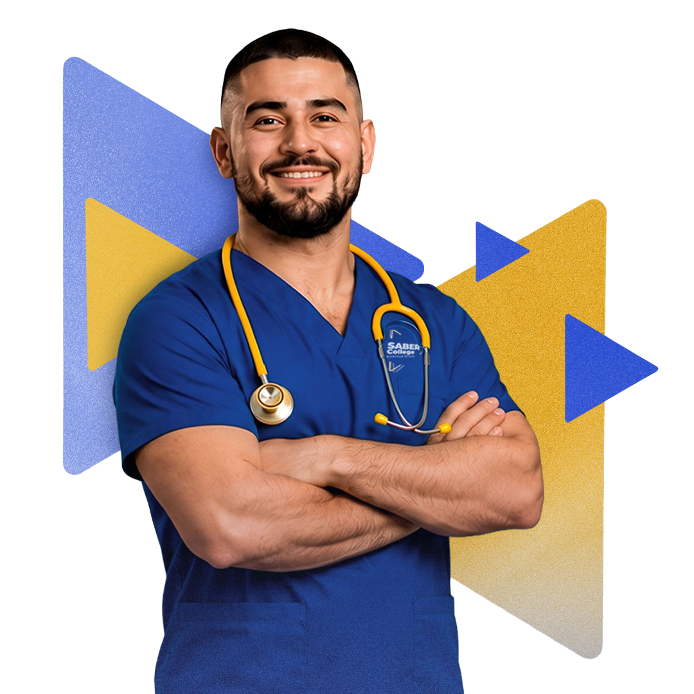
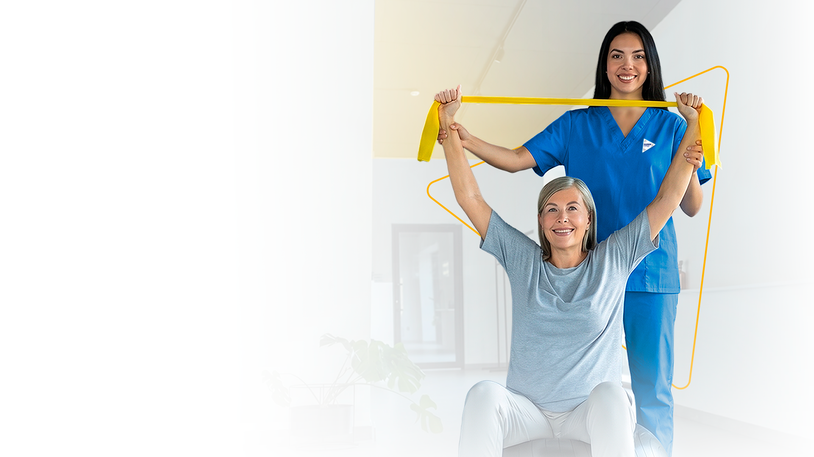
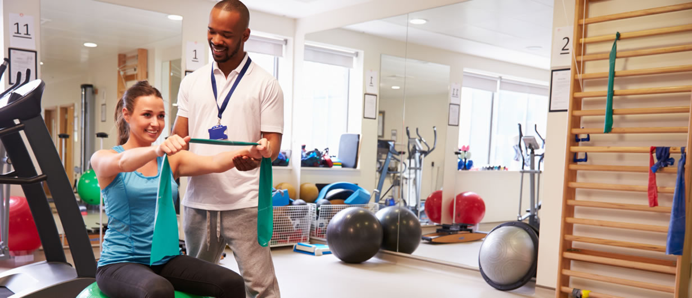

Care / Cercanía
Fotografías a la altura de las personas, esquinas amables, Nunito y ayuda visible. Cada formulario explica qué ocurrirá después.
SABER College · Visual direction 02
Healthcare education with a human connection. A visual language shaped by care, practical learning and the confidence to take your next step.
Dirección creativa propuesta, no un nuevo eslogan aprobado.
Derivada de la home y de la personalidad descrita en profile.md.
01 / La idea que conecta el sistema
Cuidar el futuro, paso a paso
La fortaleza de SABER está en su cercanía: dos caminos en salud, aprendizaje práctico y acompañamiento personal, con raíces en Miami desde 1972.
Fotografías a la altura de las personas, esquinas amables, Nunito y ayuda visible. Cada formulario explica qué ocurrirá después.
Blanco, jerarquía y azul profundo. Los requisitos, documentos y diferencias entre programas se entienden antes de pedir datos.
Un trazo abierto inspirado en el logo guía la mirada. Amarillo en el siguiente paso; recorridos cortos, comprensibles y humanos.
Criterio editorial: la interfaz de ejemplo está en inglés; las anotaciones de revisión están en español. El copy nuevo es una propuesta para este prototipo.
01 · Foundations
White and light surfaces do most of the work. Navy establishes trust; yellow signals the next step.
Typography
Heavy headings create confidence. Open line-height and compact paragraphs preserve the approachable tone.
02 · Background language
El trazo abierto expresa avance y acompañamiento. Los fondos concentran el detalle en los bordes para dejar el contenido en calma.
For long-form reading, forms and information-dense components.
Admisiones, acompañamiento y comunidad. Calidez sutil, con líneas en los bordes.
Programas y cabeceras. Una dirección ascendente inspirada en la geometría del logo.
For accreditation, institutional statements and high-confidence transitions.
Imagen de contexto con una zona de lectura protegida. El rostro permanece visible.
Una línea, mucho blanco. Para información extensa, recursos y lectura editorial.
Fondos reutilizables: tres archivos SVG originales en design-system-assets/. Se pueden usar como imagen de fondo en Elementor; los textos permanecen en widgets editables.
03 · Core components
Each section gets one primary action. Secondary actions support it rather than compete with it.
Program discovery
Program cards combine imagery from the current library, comparable details and one direct next step.

Full-time programAssociate of Science
Build clinical knowledge, practical skills and confidence through theory, laboratory and clinical experience.
Explore Nursing →
Hands-on learningAssociate of Science
Prepare to support patients as they regain movement and manage pain under a physical therapist's supervision.
Explore PTA →Decisión / Comparador
Comparar con las mismas categorías ayuda a elegir sin depender de dos páginas abiertas.
| At a glance | Professional Nursing | Physical Therapist Assistant |
|---|---|---|
| Credential | Associate of Science | Associate of Science |
| Your focus | Nursing knowledge, clinical judgment and patient care. | Movement, therapeutic interventions and patient care under a physical therapist's supervision. |
| How you learn | Theory, laboratory and clinical rotations. | Theory, hands-on skills and clinical education. |
| Next step | Explore the nursing path → | Explore the PTA path → |
En móvil la tabla conserva las columnas y permite desplazamiento horizontal dentro del componente. La página completa no se desplaza lateralmente.
Admisiones / Recorrido con acompañamiento
Your next chapter
Explore your options and connect with our admissions team as you prepare for your next chapter.
Discover how Nursing and PTA connect with your interests in healthcare.
Compare your options →Review the admission requirements specific to your chosen program.
Explore resources →Ask about the application process, tuition and available support.
Connect with admissions →Gather the required documents and follow your program's application process.
Find student support →Los cuatro pasos describen orientación, no admisión garantizada. Los enlaces de esta muestra llevan a componentes del prototipo.
Reusable value pattern
Personal attention, practical education and academic support help students stay focused on their goals.
Experienced instructors connect classroom knowledge to real healthcare environments and responsibilities.
Admissions, advising, tutoring and career services provide a more connected student journey.
Institucional / Cabecera, documentos y búsqueda
Information you can find
Find the information, plans and resources that support your experience at SABER College.
4 resources
Student guides and institutional handbooks
Campus safety information
Institutional reporting and transparency
Academic requirements and next steps
Try another word or view all resources.
Probar: busca, filtra y abre una vista previa. La implementación final enlazará al recurso real y mostrará formato, fecha y tamaño únicamente cuando se conozcan. Las migas de pan permanecen centradas.
Servicios / Ayuda visible
Different questions deserve different next steps.
Get guidance on programs, requirements and the application process.
Start a conversation →Explore tuition and financial assistance available to those who qualify.
3990 West Flagler Street
Suite 103, Miami, FL 33134
Prefer to speak with someone? (305) 443-9170 · saber@sabercollege.edu
Iconos de trazo uniforme: 24 × 24, grosor 1.5, siempre acompañados de texto. El teléfono y correo son enlaces reales del perfil; los formularios son demostrativos.
Editorial system
Editorial / Historias, aprendizaje y pertenencia

Explore how classroom concepts and practical skills come together in physical therapist assistant education.
Discover the PTA path →Composición editorial de ejemplo. Imagen de la biblioteca existente; no se identifica como fotografía del campus.
Meet Sabi
Sabi brings a welcoming voice to student life, orientation and the stories that connect the SABER community.
Explore community stories →Una función para cada imagen: aprendizaje en programas, personas y experiencias en historias, Sabi en comunidad. La mascota no acompaña textos de acreditación, seguridad o regulación.
Conversión / Laboratorio interactivo
Tres momentos distintos, tres formularios. Prueba campos vacíos, correos inválidos y confirmaciones usando datos ficticios.
Let's talk about your future
Tell us what interests you. Start with the information you need to explore your next step.
Prefer to call? (305) 443-9170
Uso: página de contacto, detalle de programa o cierre. Cinco campos; teléfono opcional. Sin cuenta ni documentos.
Get to know SABER
Request a campus visit to learn more about your program and ask questions in person.
3990 West Flagler Street, Suite 103
Miami, Florida 33134
Uso: campus, admisiones o campañas. Dos pasos, con navegación hacia atrás que conserva los campos. La fecha es una preferencia, no una reserva.
Make an informed decision
Get guidance on tuition, payment options and financial assistance available to those who qualify.
Uso: tuition y ayuda financiera. Orientación breve. No solicita ingresos, documentos ni datos bancarios.
Solicitud breve: widget Form de Elementor Pro/Pro Elements. Visita: Form con campos Step, mensajes de validación y envío al equipo correspondiente. Orientación: Form con Radio. Los tres usan labels visibles, foco de teclado y mensajes en texto. Integrar los consentimientos aprobados y una confirmación real solo después de respuesta satisfactoria del servidor. Este laboratorio no conecta con WordPress ni envía datos.
Estados / Una interfaz que responde
Un error explica cómo avanzar. El color acompaña al mensaje, nunca lo reemplaza.
Muestra estática del estado de error.
Your request has been received. El estado real solo se muestra tras un envío confirmado.
We couldn't send your request. Your details are still here. Please try again.
Voz SABER
“Not sure which program fits? Let's explore your options.”
Cercanía sin presión. Una invitación clara y una persona al otro lado.
Control editorial
“Guaranteed job.” / “Everyone qualifies.”
Evitar garantías de admisión, empleo o ayuda financiera. Explicar el proceso, los requisitos y el apoyo disponible.
Disclosure pattern
Composición / Del componente a la página
Tres composiciones para que cada página resuelva su propósito y conserve la personalidad de SABER.
La home, el header y el footer aprobados son referencias protegidas. El sistema se aplicará progresivamente a las páginas internas después de la aprobación.
Closing pattern
A clean closing section restates the value and offers no more than two meaningful actions.
Revisa la personalidad, el ritmo entre fondos e imágenes y la claridad de los recorridos. Los ejemplos funcionan como una biblioteca para próximas páginas.
Revisar dirección creativa ↑La aprobación visual no aprueba automáticamente copy nuevo, cifras, consentimientos ni afirmaciones institucionales.